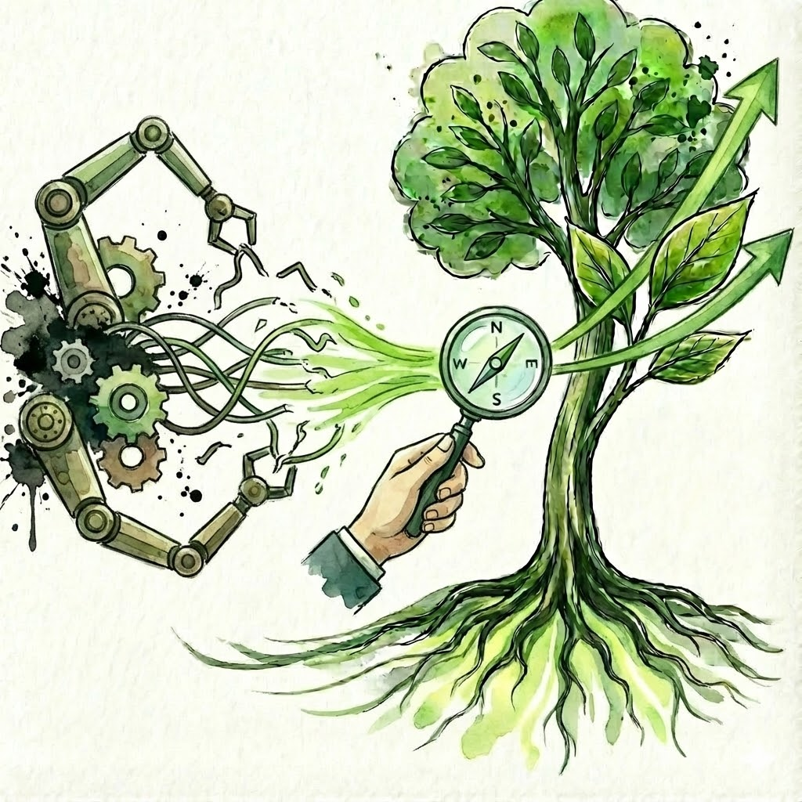

מעבר למספרים
המטרה שלי היא לייצר בהירות למקבלי ההחלטות, להעניק שקט נפשי ולבנות את היסודות הפיננסיים שמאפשרים לארגון ולמנהלים שבו לרוץ קדימה
אחרי קרוב לשני עשורים בהובלת מערכים פיננסיים, כולל שש שנים כסמנכ"ל הכספים (CFO) של מעבדות רפא, הבנתי שתפקיד איש הכספים הוא הרבה מעבר לדוחות. הוא עוסק במנהיגות, בחיבור בין אנשים ובקבלת החלטות אמיצה.
הובלתי תהליכים אסטרטגיים מורכבים – ממיזוגים ורכישות (M&A), דרך הטמעת מערכות מידע ועד לרכישה על ידי קרן פימי והובלת הטרנספורמציה בשנים שלאחר מכן. כיום, אני משלב את הניסיון העסקי העשיר עם עולמות האימון האישי והמנטורינג, כדי לתת מעטפת שלמה למנהלים וארגונים.
הערך המוסף שלי
- שילוב נדיר בין ראייה מערכתית, פיננסית ותפעולית להבנה אנושית עמוקה
- ניסיון שטח מוכח בחברות צומחות ובשינויים ארגוניים
- ניסיון בהובלת תהליכים עסקיים ופיננסיים מורכבים
- ניסיון מעשי ('Hands-on') בבניית מחלקות כספים ותפעול
פתרונות עסקיים ומקצועיים
Fractional CFO & Advisor
CFO במיקור חוץ
מנהיגות פיננסית בכירה לארגונים בצמיחה או שינוי (Scale-up, M&A), ללא התחייבות למשרה מלאה. שילוב של חשיבה אסטרטגית ברמת דירקטוריון עם ביצוע Hands-on, לבניית תשתית פיננסית שמעניקה למנכ"ל שקט, ודאות ושותף אמיתי לדרך.
מנטורינג למנהלים
ליווי אישי ותפקודי
ליווי מנהלי כספים – לשיפור ביצועים אישיים ותפקוד המחלקה:
- הופך מנהלי כספים מ"אנשי דוחות" לשותפים עסקיים ומנהיגים
- תהליך מובנה של אבחון וחיזוק מחלקת הכספים
- מגדיל את סיכויי ההצלחה של גיוס יקר ומצמצם שחיקה בתפקיד
מתי נכון לשלב אותי בארגון?
צמיחה מהירה
בניית אופרציה סקיילבילית, נראות תזרימית ומנגנוני בקרה
אתגרים תפעוליים
לחץ תזרימי. אי בהירות בתכנון קדימה. קשיים בתמחור ובמכרזים. צמיחה איטית.
M&A ומכירה
הכנת החברה למשקיעים, בדיקת נאותות, ובניית הסיפור הפיננסי הצופה פני עתיד.
נקודות מפנה
שינויי הנהלה, שינוי כיוון עסקי (Pivot), או גיוס הון
גוף כספים קיים כדי לייצר ערך: לא בסיסמה אלא הלכה למעשה- לסגור מעגלים, ליצור בהירות, לחבר בין ההווה לעתיד, להבין לעומק את המשמעות של כל החלטה, ולוודא שהכול מתפקד בביטחון ובשליטה. כשזה קורה, הערך כבר לא נמצא בסיסמאות, אלא בתוצאות.
צמיחה והתפתחות אישית
כי מגיע לך לאהוב את העשייה שלך

אימון אישי למנהלים ולאנשים הישגיים
מרחב שקט ומובנה למי שרוצים לפרוץ תקרות זכוכית, לייצר בהירות בצמתי החלטה ולחבר בין הצלחה לסיפוק. תהליך אימון אישי קצר וממוקד לעשיית סדר, זיהוי מה שכבר פחות מדויק ותרגום המטרות לצעדים מעשיים בשטח.
הדיוק הפנימי הוא המפתח לפריצה חיצונית


טקסטים נבחרים
הצצה לתפיסת העולם שלי מתוך פרסומים אחרונים
"הצילו, AI! או האם הבינה המלאכותית עומדת להחליף את אנשי ומנהלי הכספים?"
קרא עוד"מחלקת הכספים שלכם - מדווחת על העסק או מובילה אותו? על התפקיד האמיתי של ה-CFO."
קרא עוד"אף אחד לא נולד CFO. איך מבטיחים את הצלחת איש הכספים הבכיר בארגון?"
קרא עוד"ש בכם חוסר שקט. זה מתבטא בחוסר שביעות רצון מהתפקיד, או מהממונים, או מהתמורה. אבל למה זה קורה? ומה אפשר לעשות?"
קרא עוד"איך מתקדמים בקריירה ובחיים, על אף "נתוני הפתיחה" שלנו, הניסיון הלא-מושלם או התואר הלא-מדויק?"
קרא עוד"אפשר להיות מקצועי, חרוץ ומדויק – ועדיין לא להיות רלוונטי. למה זה קורה למחלקות כספים, ואיך יוצאים מזה באמת."
קרא עוד"די לתנועה על גבי העקומה ! הגיע הזמן לדחוף אותה למעלה."
קרא עוד"מנהלים – אתם עושים באמת, או רק עושים את התנועות?"
קרא עוד"משחיקה וחוסר הערכה, להובלה והשפעה ארגונית."
קרא עוד"מה באמת עושה CFO מצוין, ואיך הוא מייצר ערך לארגון, לא בסיסמה, אלא במציאות היומיומית."
קרא עוד